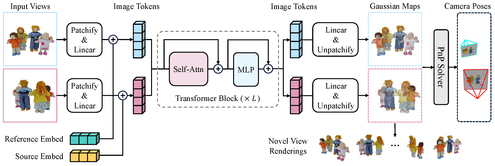

Existing sparse-view reconstruction models heavily rely on accurate known camera poses. However, deriving
camera extrinsics and intrinsics from sparse-view images presents significant challenges. In this work,
we present FreeSplatter, a highly scalable, feed-forward reconstruction framework capable of
generating high-quality 3D Gaussians from uncalibrated sparse-view images and recovering their
camera parameters in mere seconds. FreeSplatter is built upon a streamlined transformer architecture,
comprising sequential self-attention blocks that facilitate information exchange among multi-view image
tokens and decode them into pixel-wise 3D Gaussian primitives. The predicted Gaussian primitives are situated
in a unified reference frame, allowing for high-fidelity 3D modeling and instant camera parameter estimation
using off-the-shelf solvers. To cater to both object-centric and scene-level
reconstruction, we train two model variants of FreeSplatter on extensive datasets. In both scenarios, FreeSplatter
outperforms state-of-the-art baselines in terms of reconstruction quality and pose estimation accuracy.
Furthermore, we showcase FreeSplatter's potential in enhancing the productivity of downstream applications, such as
text/image-to-3D content creation.

Pipeline. Given N input views without any known camera extrinsics nor intrinsics, we first patchify them into image tokens, and then feed all tokens into a sequence of self-attention blocks to exchange information among multiple views. Finally, we decode the output image tokens into N Gaussian maps, from which we can render novel views, as well as recovering camera focal length and poses with simple iterative solvers.